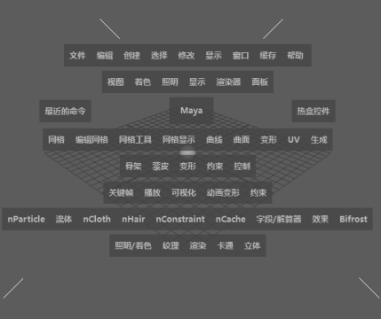

热盒中包含了
Maya 界面上可用的每项操作。要打开热盒，请在视图中按住空格键。

热盒有三项主要功能：
- 包含每个菜单和菜单项。如果要快速使用其他菜单集的操作，又不想切换，使用热盒无疑是最好的选择。
- 即使已经为了节省空间将菜单栏（按 Ctrl+M）和其他 UI 元素隐藏，也可以使用热盒选择操作。
- 热盒提供了五个可自定义的标记菜单，可以通过单击“热盒控件”(Hotbox Controls)选项的内部、上方、下方、左侧或右侧来显示。
从热盒中选择一项操作
- 在视图中按住空格键以打开热盒。
只要按住空格键，热盒就会一直停留在屏幕上。
- 单击菜单并在选中了某选项的同时进行拖动，或是在热盒周围的任意位置单击空白区域，以显示其他标记菜单。
提示： 单击标记菜单顶部的拖曳线可以在单独的窗口中打开。